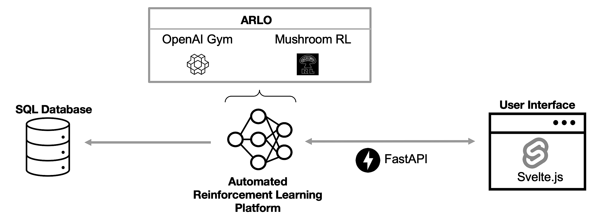

Simplify Reinforcement Learning (RL) processes with a dynamic, web-based platform designed to visualize and optimize decision-making tasks.
What is Reinforcement Learning?
Reinforcement learning (RL) is a method in machine learning for addressing sequential decision-making problems. RL agents learn optimal behaviors through trial and error, receiving feedback from their environment. Applications include autonomous driving, robotics, healthcare, finance, and gaming.
Features
Interactive RL Visualization
AutoRL X introduces RL visualizations and web-based real-time tools to better understand RL agent behaviors and performance.
Open-Source Expansion
With frameworks like ARLO and Svelte.js, AutoRL X ensures a smooth and extensible user experience for both researchers and practitioners.
Real Applications
Explore real-world applications, such as optimizing tasks for autonomous driving, robotics, healthcare, production finance, and gaming.
Installation Overview
AutoRL X can be deployed quickly using Docker for a hassle-free setup. Alternatively, advanced users can run it in developer mode for custom configurations. Detailed installation instructions are available in our GitHub repository.
About AutoRL X
AutoRL X is an open-source platform designed to simplify reinforcement learning (RL) processes. It provides real-time web-based visualizations and intuitive interfaces for decision optimization, making RL accessible and effective for diverse applications.
By bridging the gap between complex RL workflows and user-friendly tools, AutoRL X empowers industries such as healthcare, robotics, and autonomous systems to tackle real-world challenges with confidence and efficiency.
Innovative and Extensible
Built on frameworks like ARLO and Svelte.js, AutoRL X integrates seamlessly with industry-standard RL libraries such as OpenAI Gym and Gymnasium.
For more information, explore our GitHub repository or read our ACM publication.
Need Help?
For support or inquiries, reach out to us at support@autorlx.com or write an issue in our GitHub repository.